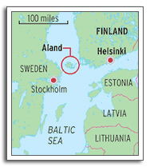

Snoose is the pronunciation of the Swedish term for moist tobacco snuff held in the mouth -
SNUS
Snus comes in either loose form or in small prepackaged bags (packets, sachets)
made of the same material as tea bags. Snus accounts for half of the Sweden's total tobacco consumption.
It is estimated that, out of a total population of 9 million, 1.1 million Swedes are snus users. Swedish
consumers of moist snuff were among those hardest hit when finance minister Anders Borg presented his debut
budget in mid-October. From the beginning of 2007, tax on the product is set to double. A small box of moist
snuff, or 'snus' to give it its Swedish title, is expected to increase in price from 26 to 37 kronor (7 kronor
equal 1 USD).(Swedes stock up on moist snuff, paul.omahony@thelocal.se, The Local, 12/13/2006)
 Sweden first started tucking snus under the lip at the end of the 1700s.
In 1822, Jacob Fredrik Ljunglof started manufacturing snus producing a product called
Ljunglof's Ettan (Number One) snus.
During the 1800's several people in Sweden started a new process of grinding tobacco and mixing this
with water, flavoring and salt. Many of the early recipes are forgotten now but the one recipe that survived was
Ettan. This is the origin of Swedish snus as it is known today.
Sweden first started tucking snus under the lip at the end of the 1700s.
In 1822, Jacob Fredrik Ljunglof started manufacturing snus producing a product called
Ljunglof's Ettan (Number One) snus.
During the 1800's several people in Sweden started a new process of grinding tobacco and mixing this
with water, flavoring and salt. Many of the early recipes are forgotten now but the one recipe that survived was
Ettan. This is the origin of Swedish snus as it is known today.
Jacob Fredrik Ljunglof
In 1970 the first portion-packed snus (Portionsnus) was
launched. It was an important step for snus to reach other cliental like women.
Portion snus was introduced in 1974 in order to offer the consumers a product that does not give dirty fingers and which
is easier to get rid of after use. Traditional portion snus, as it was introduced in 1974, consists of dried tobacco powder
packed in a fiber bag – size 18x33 mm. The bag is subsequently humidified until the portion reaches 55% moisture. The result
is a portion bag on 1 gram with the looks of a used tea bag. This product is known as a standard portion. The portion snus has
developed since the introduction. Today, two smaller portion bags on 0,4 gram and 0,6 gram exist. These are especially targeted
at women and beginners. The small portion bags is available as traditional portion snus where the bag is humidified on the outside
and as a “Dry” variant where the product has a completely white look.
Since spring 2004 the producers has launched XL snus portions from 1,5 gram to 2 gram, all traditionally humidified. The products
have been introduced to accommodate the many large-scale consumers who are used to using 2-4 pieces of standard portion snus at
a time.
Snus is illegal in every country in the European Union (EU) except Sweden. When Sweden entered the EU
in 1995 it negotiated this exemption from the ban because of the popularity of the product among its population.
Snus is also consumed in Norway - this country is not a member of the
EU but is part of the
Europe Economic Area (EEA)
with Iceland and Liechtenstein. Norwegians consume just 15 million cans of snus a year, lagging behind Sweden's
190 million cans. Norway's smoking ban that took
effect in January 2004 is what got sales of snus rolling. Two of the Norway's major retailers reported
a 30-40% rise in snus sales in June 2004. Smoking is only allowed in a persons' home or outside (Snuff firms sniff a profit in
smoking bans, Jorn Madslien, BBC Newsline Online Business Reporter, Oslo, Norway, 9/6/2004).

Åland’s 26,000 citizens, who speak Swedish but live on a Baltic archipelago that is a self-governing region of Finland, have
the right to veto any international treaty that Helsinki considers entering into. They intend
to wreck the European Constitution because the
EU wants to prevent them from consuming “snus”.
A survey looked at consumption of snus, Swedish moist oral tobacco. It showed that women have started to
use snus, although still in relatively small numbers. Some 5 percent of women used snus in 2004-2005, compared to
27 percent of men. The figures have been taken from Statistics Sweden's annual surveys of Swedes' living standards.
The figures were taken from the 2004 and 2005 surveys. In each of these, around 7,500 people over 16 were interviewed
(The Local, 2/27/2007).
In general, Swedish Snus contains four main ingredients: selected tobaccos, water, salt and humectants.
Flavor additives are also used.
NAME: Ettan Original Portion Large
DESCRIPTION:
One of the oldest Snus brands in Sweden. Originally it was manufactured by Ljunglöf, the well known snus producer.
The pouch variety was launched in 1990. On sale in Sweden and Norway. One can contains 24 grams.
DECLARATION OF CONTENTS:
Water
Tobacco
Humectants (E 1520)
Acidity regulator (E 500)
Taste enhancer (table salt)
Flavour substances incl. Smoke food flavour
ANALYTICAL DATA:
Water: ca 50 %
Nicotine: ca 8 mg/pouch
Salt: ca
How is Swedish snus produced? from information provided by Swedish Match
Swedish snus is made from high quality tobacco, specially selected for the lowest possible levels of undesirable
components. Swedish Match experiments with cultivation in different countries to achieve the best possible raw tobacco.
Important characteristics such as processing flexability and taste vary depending on seed type, growth location, climate,
leaf position on the plant and curing conditions.
Swedish snus production involves three main steps: grinding, processing and packaging. First, the tobacco leaves are pulverized.
Particle size varies according to the brand. A blend contains between 10 and 30 different grades of tobacco.
Next, the tobacco is mixed with water and salt. It then undergoes heat treatment. Afterwards, it is chilled and flavor is added.
Finally, the snus is packaged in loose (loose snus) or pouch (portion snus) form in cans.
Additives
The main ingredients in the preparation of snus are ground tobacco, water, salt (ordinary cooking salt) and sodium carbonate
Additional ingredients are aromatic compounds and moisture-preserving substances. The salt is added for two reasons: to add
to the flavor and to extend the keeping qualities of the snus. Sodium carbonate is used to give the snus its characteristic
flavor and aroma and also gives it a slightly basic pH value. As soon as the sodium carbonate is added, it is converted into
bicarbonate, which is therefore present in the finished snus. The aromatic compounds comprise both natural and synthetic
substances that are approved for use in foods. The aromatic compounds are normally added in the form of alcohol solutions.
Most of the alcohol evaporates during production, leaving only trace amounts in the snus.
The moisture-preserving substances are added to prevent the snus from drying out. Two such substances glycerol and propylene
glycol are used in snus production. Both have a certain conserving effect, since they reduce the so-called water activity of
the snus, thereby making it more difficult for bacteria to grow in the snus.
Production
There are three main stages in the production of Swedish snus in accordance with the GothiaTek® standard: grinding, preparation
and packing. During the production process, the flavor profile is influenced by the fact that the consistency varies between the
different recipes. For example, a porous snus releases its flavor more rapidly than a more compact snus.
Grinding
The tobacco is broken up, dried and fed into a grinder, where it is ground. The ground tobacco is screened into coarse,
intermediate and fine meal. Depending on the recipe, different amounts are sent to a blending silo, where the snus meal
is blended. Each type of meal is stored in a separate silo and retrieved automatically when snus is to be produced.
Preparation
Snus production is controlled by a process computer. In the first stage of preparation, tobacco meal is weighed and transported
to closed blenders. Water and salt are added while the mixture is stirred, after which the snus is heated up. The temperature
of the snus mixture and the stirring process are computer-controlled via a special program. This part of the process is
traditionally known as sweating and can be compared with pasteurization. After the heat treatment is completed, the snus
is cooled and other ingredients are added. Samples are taken for purposes of quality control. If all the measurement values
are approved, the batch is ready for packing.
Packing of loose snus
Cans are filled in automatic packing machines. After filling, the cans are closed with a lid. They are then weighed.
Labels are then attached to the ready-packed cans. The cans are packaged in 10-packs using shrink-wrap film, and the
10-packs are then packed in cartons. Packing of portion-packed snus Packing of portion-packed snus requires a more
complicated process. The portions are measured and inserted into a tube made from cellulose fiber. The portions are
sealed and cut apart. The finished portion pouches are packed into a plastic can, which is then sealed with a lid,
after which the cans are weighed and labeled.
Packaging materials
Loose snuff is mainly packaged in paraffin-coated cartonboard cans. When the cans are produced, two different grades of
cartonboard are used one for the frame and one for the base of the can. The lid is made from polypropylene plastic.
Polypropylene cans are used for portion-packed snus.
Portion-packed snus is more sensitive to drying out than loose snus, mainly because the amount of snus is smaller in a can
of portion-packed snus. This means that the use of plastic cans for portion-packed snus is primarily motivated by durability
considerations.
Cold storage
All ready-packaged snus is stored in cold-storage rooms for a number of days before being released to retailers. Cold storage
is important for allowing the snus to mature and acquire its characteristic aroma and flavor.
{kind=link}